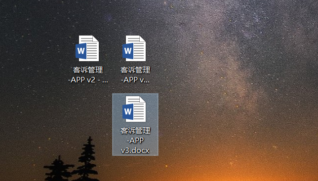
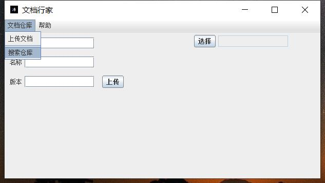
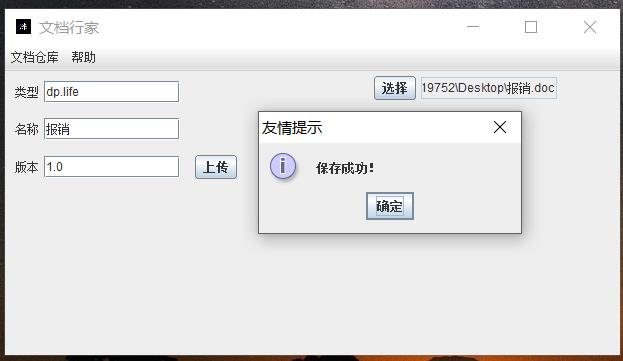
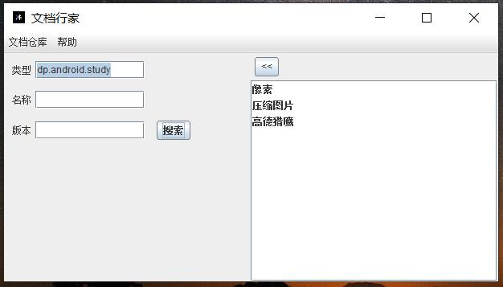
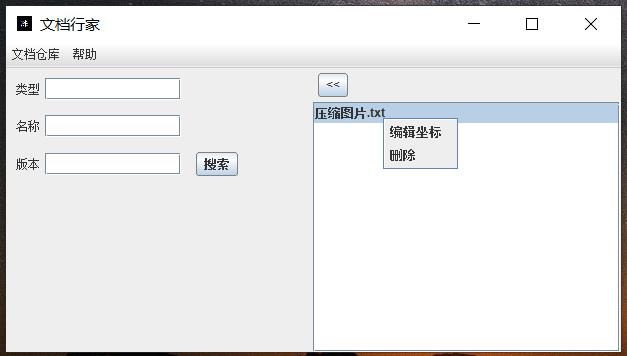

文档行家使用说明
文档行家致力于对word文档，文本txt进行分类和版本控制，所以统称为文档。
我们平时工作或者笔记学习会产生许多文档，它们可能分布在我们系统盘的各处，也许你可以专门创建一个或者多个目录管理它们。但是针对同一份报告可能会出现多个不同的版本。
 时间久了众多文档变得难以维护，很难在多个版本中选择，想删又不敢删。虽然市面上流行着很多文档管理工具，但是编辑效果却无法还原word操作。
本人开发的这款桌面应用支持通过软件界面打开word文档，直接进行编辑保存，更多的是面向开发者思维的文档仓库存储，树形目录结构，通过类似maven构建工具的坐标定位，实现搜索和定位文档功能。
软件说明| 开发语言 | Java swing库 |
| 支持jdk版本 | 1.8以上 |
| 支持平台 | windows系统 |
| 源码特色 | 自定义组件，采用mvc升级版mvp架构 |
| 配置文件 | 通过简单的配置，实现不同的功能效果 |
| 项目维护中 | 后期会提供更多功能 |
软件截图

上传文档到仓库

上传成功

搜索文档 双击打开文档

搜索文档 右键编辑坐标